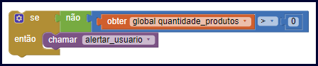

Nessa aula vamos aprender o que são os operadores lógicos e como podemos usá-los no desenvolvimento dos nossos aplicativos.
Nem sempre as decisões que tomamos em nossas vidas são simples ou dependem de apenas uma condição. Existem momentos em que precisamos analisar vários cenários para decidir qual é a melhor ação a ser executada.
No desenvolvimento de softwares nós também usamos as condições para tomar decisões, e como na vida, nos nossos aplicativos há momentos em que as decisões não podem ser tomadas analisando apenas uma condição.
Para conseguirmos usar várias condições juntas em nossos aplicativo nós temos a disposição os operadores lógicos que vamos conhecer nessa aula.
Os operadores lógicos nos permitem verificar mais de uma condição ao mesmo tempo.
Na aula anterior nós usamos o exemplo de um despertador, que para tocar o alarme precisa verificar se a hora de despertar é igual a hora atual.
Mas imagine que além de verificar se a hora é igual, o despertador também precisa verificar o dia da semana, pois podemos colocar o despertador para tocar às seis horas de segunda a sexta e às oito horas aos sábado e domingos.
Nesse caso precisaríamos verificar duas condições para saber se o alarme deve ser tocado ou não. Os operadores lógicos tem essa função, de permitir usar mais de uma condição ao mesmo tempo.
Normalmente usamos os operadores lógicos em situações onde precisamos verificar mais de uma condição ao mesmo tempo para decidir qual ação executar.
Imagine que você está desenvolvendo um aplicativo de agenda, onde o usuário informa o dia e a hora do compromisso que precisa lembrar. Nesse caso você precisa criar uma condição no seu aplicativo, para que ele toque um alarme apenas quando chegar no dia e na hora do compromisso agendado.
Como você pode perceber temos que fazer duas condições, a primeira é verificar o dia e a segunda é verificar a hora. Para resolver esse problema você poderá usar os operadores lógicos.
Veja abaixo os operadores lógicos que podemos usar no App Inventor e na maioria das linguagens de programação.
| Operador | Exemplo | Descrição |
|---|---|---|
| E | “condição 01” E “condição 02” | Retorna o valor Verdadeiro quando a primeira e a segunda condição retornarem Verdadeiro, e retorna o valor Falso se uma das condições retornar Falso. |
| OU | “condição 01” OU “condição 02” | Retorna o valor Verdadeiro quando a primeira ou a segunda condição retornarem Verdadeiro, e retorna o valor Falso se as duas condições retornarem Falso. |
| NÃO | NÃO “condição 01” | Pega o valor retornado pela condição e inverte, quando a condição retorna Verdadeiro ele transforma para Falso, e quando a condição retorna Falso ele transforma para Verdadeiro. |
Esses operadores são usados na maioria das linguagens de programação, mas o símbolo usado para representá-los pode mudar em diferentes linguagens, por exemplo o operador E no App Inventor é representado pela letra “e”, na linguagem de programação Java por exemplo, é representado por “&&” e em algumas linguagens é representado por “AND”.
Assim os operadores OU e NÃO também podem ser representados com símbolos diferentes em outras linguagens, no entanto o funcionamento do operador continuará sendo o mesmo em todas as linguagens.
O operador E é usado nos casos onde precisamos que todas as condições sejam verdadeiras para executar determinada ação.
Por exemplo, ao fazer login no seu e-mail é necessário que o usuário e a senha estejam corretos para que seu e-mail abra. Aqui temos duas condições, a primeira é que o email digitado esteja certo e a segunda é que a senha digitada esteja certa.
Nesse exemplo o e-mail só pode abrir se ambas as condições forem verdadeiras, por isso usamos o operador E para juntar as condições.
Veja como ficaria esse exemplo desenvolvido no App Inventor.
O operador OU é usado nos momentos onde temos mais de uma condição, no entanto se pelo menos uma for Verdadeira a ação deve ser executada, ou seja, não é necessário que todas as condições sejam Verdadeiras para a ação ser executada.
Pense, que você vai criar um aplicativo que verifica a temperatura corporal do usuário e deve alertá-lo caso a temperatura não esteja normal.
A temperatura pode ser considerada normal quando estiver entre 36.1ºC e 37.2ºC, caso contrário significa que há algo errado, nesse caso precisamos de duas condições para verificar se há algo errado.
Primeiro verificamos se a temperatura é menor que 36.1ºC, depois verificamos se a temperatura é maior que 37.2ºC, se a primeira ou a segunda condição for verdadeira então o aplicativo deve alertar o usuário que algo está errado.
Nessa situação temos que alertar o usuário se pelo menos uma das duas condições for verdadeira, por isso vamos usar o operador OU para juntar as condições.
Veja como ficaria esse exemplo desenvolvido no App Inventor.
O operador NÃO é usado nos momentos onde você quer que determinada ação seja executada apenas quando a condição usada retornar Falso, pois o operador NÃO tem a função de inverter o resultado.
Imagine, que seu sistema deve controlar a quantidade de produtos no estoque de uma empresa, e sempre que não tiver mais produtos em estoque seu sistema deve informar o usuário.
Nesse caso, seu aplicativo vai precisar verificar se não há mais produtos em estoque, e se realmente não tiver mais produtos então a ação de informar o usuário deve ser executada.
Para resolver esse problema você pode usar o operador NÃO, pois a ação só deve ser executada quando a condição “quantidade de produto for maior que zero” retorna Falso.
Veja como ficaria esse exemplo desenvolvido no App Inventor.

Nessa aula nós aprendemos como funcionam e como usar os operadores lógicos no App Inventor, com esses operador nós podemos usar mais de uma condição ao mesmo tempo nas estruturas condicionais que aprendemos na aula passada.
Na próxima aula vamos desenvolver um aplicativo utilizando os operadores lógicos, para que você possa ver na prática o funcionamento deles.
Caso você tenha ficado com dúvidas ou tenha alguma sugestão mande sua pergunta ou envie uma mensagem para nós, responderemos a mais rápido possível.
Até a próxima aula.
Mozilla Foundation. Operadores Lógicos. MDN Web Docs, 2019. Disponível em: https://developer.mozilla.org/pt-BR/docs/Web/JavaScript/Reference/Operators/Operadores_Logicos. Acesso em 21 de agosto de 2019.
ALVES, Gustavo Furtado de Oliveira. Conheça os operadores lógicos. Dicas de Programação, 2013. Disponível em: https://dicasdeprogramacao.com.br/operadores-logicos. Acesso em 21 de agosto de 2019.
SALES, Janyele. Qual é a temperatura normal do corpo humano. Médico Responde, 2016. Disponível em: https://medicoresponde.com.br/qual-e-a-temperatura-normal-do-corpo-humano/. Acesso em 21 de agosto de 2019.